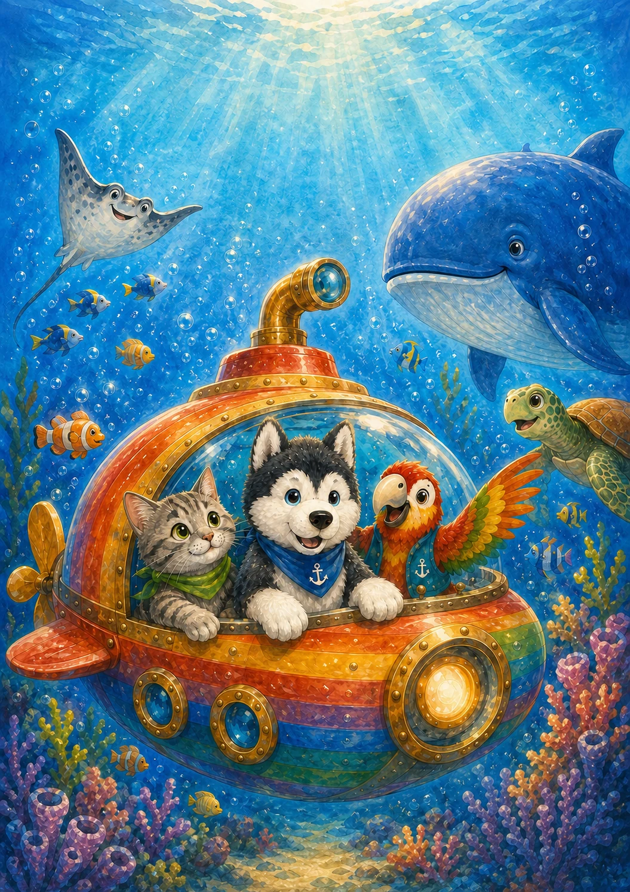

Biblioteca ilustrada
As Aventuras do
Cão Joaquim e amigos
Histórias inventadas em família, cheias de imaginação, gargalhadas e descobertas.

Primeira aventura
Uma viagem ao fundo do mar
Joaquim, Alberto e Gilberto encontram um submarino arco-íris e partem à procura das suas amigas. Pelo caminho há um pequeno choque, um bolo muito estranho e um monstro inesperado.
- Amigos
- 6
- Cenário
- Fundo do mar
- Para ler
- Em família
A coleção
Todas as aventuras
Uma história pronta para abrir. A próxima fica para depois.